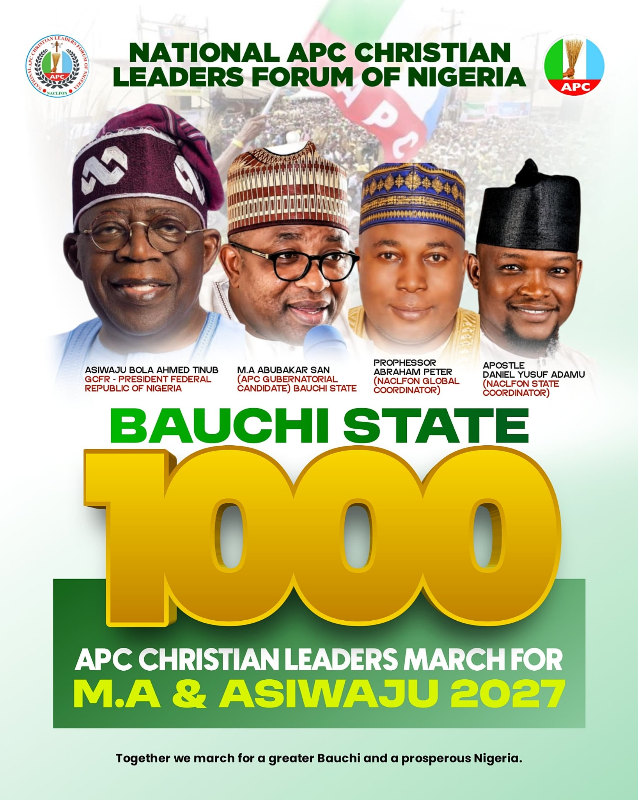

01
Welcome to the APC Christian Family Affairs of Bauchi State Nigeria
A connected community across 20 Local Government Areas, three senatorial districts and numerous wards.
The National APC Christian Leaders Forum of Nigeria, Bauchi State Chapter, provides a platform for members to connect, stay informed and learn more about the organisation's presence across the state.
Register. Be counted. Build Bauchi together.
20Local Government
Areas
Areas

Our chapter in numbers
Our strength across
Our strength across
Bauchi State
20,000+Total Membership Strength
50State Central Executive Members
1,085Polling Unit Watchers
1,000LGA-Based Executive Members
5,423Polling Units
212Electoral Wards
212Ward Coordinators
212Assistant Ward Coordinators
Three senatorial districts
Our senatorial districts
02
03
Explore Bauchi State
Our 20 Local Government Areas
Browse the Local Government Areas under each senatorial district.
Bauchi South
7 Local Government AreasBauchi Central
6 Local Government AreasBauchi North
7 Local Government Areas20 LGAs across three senatorial districts.Ward counts are based on the supplied chapter information.
 BAUCHI STATE
BAUCHI STATE
Who we are
An organised, informed and connected Christian community.
The National APC Christian Leaders Forum of Nigeria, Bauchi State Chapter, exists to provide an organised platform for Christian members across the state. Learn about the chapter, its structure and the communities represented across the three senatorial districts.
Join Membership“
Seek the peace and prosperity of the city where you live.
JEREMIAH 29:7
Bauchi State Chapter membership
Membership registration
This application is open only to members resident in one of Bauchi State's 20 Local Government Areas. Please provide accurate information.